- 00 开篇词你为什么需要学习并发编程？.md
- 01 如何制定性能调优标准？.md
- 02 如何制定性能调优策略？.md
- 03 字符串性能优化不容小觑，百M内存轻松存储几十G数据.md
- 04 慎重使用正则表达式.md
- 05 ArrayList还是LinkedList？使用不当性能差千倍.md
- 06 Stream如何提高遍历集合效率？.md
- 07 深入浅出HashMap的设计与优化.md
- 08 网络通信优化之IO模型：如何解决高并发下IO瓶颈？.md
- 09 网络通信优化之序列化：避免使用Java序列化.md
- 10 网络通信优化之通信协议：如何优化RPC网络通信？.md
- 11 答疑课堂：深入了解NIO的优化实现原理.md
- 12 多线程之锁优化（上）：深入了解Synchronized同步锁的优化方法.md
- 13 多线程之锁优化（中）：深入了解Lock同步锁的优化方法.md
- 14 多线程之锁优化（下）：使用乐观锁优化并行操作.md
- 15 多线程调优（上）：哪些操作导致了上下文切换？.md
- 16 多线程调优（下）：如何优化多线程上下文切换？.md
- 17 并发容器的使用：识别不同场景下最优容器.md
- 18 如何设置线程池大小？.md
- 19 如何用协程来优化多线程业务？.md
- 20 磨刀不误砍柴工：欲知JVM调优先了解JVM内存模型.md
- 21 深入JVM即时编译器JIT，优化Java编译.md
- 22 如何优化垃圾回收机制？.md
- 23 如何优化JVM内存分配？.md
- 24 内存持续上升，我该如何排查问题？.md
- 25 答疑课堂：模块四热点问题解答.md
- 26 单例模式：如何创建单一对象优化系统性能？.md
- 27 原型模式与享元模式：提升系统性能的利器.md
- 28 如何使用设计模式优化并发编程？.md
- 29 生产者消费者模式：电商库存设计优化.md
- 30 装饰器模式：如何优化电商系统中复杂的商品价格策略？.md
- 31 答疑课堂：模块五思考题集锦.md
- 32 MySQL调优之SQL语句：如何写出高性能SQL语句？.md
- 33 MySQL调优之事务：高并发场景下的数据库事务调优.md
- 34 MySQL调优之索引：索引的失效与优化.md
- 35 记一次线上SQL死锁事故：如何避免死锁？.md
- 36 什么时候需要分表分库？.md
- 37 电商系统表设计优化案例分析.md
- 38 数据库参数设置优化，失之毫厘差之千里.md
- 39 答疑课堂：MySQL中InnoDB的知识点串讲.md
- 41 如何设计更优的分布式锁？.md
- 42 电商系统的分布式事务调优.md
- 43 如何使用缓存优化系统性能？.md
- 44 记一次双十一抢购性能瓶颈调优.md
- 加餐 什么是数据的强、弱一致性？.md
- 加餐 推荐几款常用的性能测试工具.md
- 答疑课堂：模块三热点问题解答.md
- 结束语 栉风沐雨，砥砺前行！.md
25 答疑课堂：模块四热点问题解答
你好，我是刘超。
本周我们结束了“JVM 性能监测及调优”的学习，这一期答疑课堂我精选了模块四中 11 位同学的留言，进行集中解答，希望也能对你有所帮助。另外，我想为坚持跟到现在的同学点个赞，期待我们能有更多的技术交流，共同成长。
[第 20 讲]
很多同学都问到了类似“黑夜里的猫"问到的问题，所以我来集中回复一下。JVM 的内存模型只是一个规范，方法区也是一个规范，一个逻辑分区，并不是一个物理空间，我们这里说的字符串常量放在堆内存空间中，是指实际的物理空间。
文灏的问题和上一个类似，一同回复一下。元空间是属于方法区的，方法区只是一个逻辑分区，而元空间是具体实现。所以类的元数据是存放在元空间，逻辑上属于方法区。
[第 21 讲]
Liam 同学，目前 Hotspot 虚拟机暂时不支持栈上分配对象。W.LI 同学的留言值得参考，所以这里一同贴出来了。
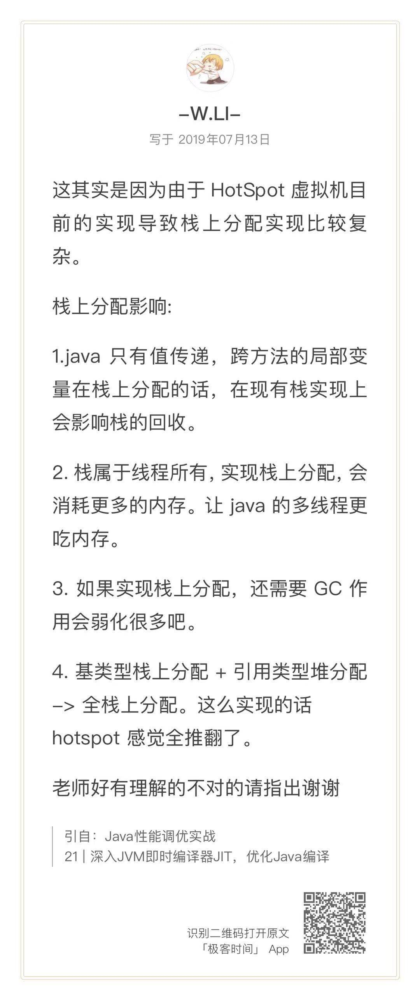
[第 22 讲]
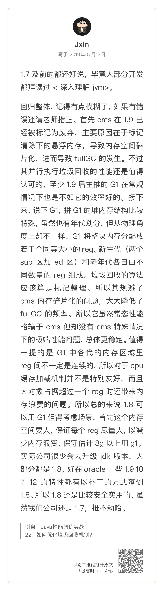
非常赞，Region 这块，Jxin 同学讲解得很到位。这里我再总结下 CMS 和 G1 的一些知识点。
CMS 垃圾收集器是基于标记清除算法实现的，目前主要用于老年代垃圾回收。CMS 收集器的 GC 周期主要由 7 个阶段组成，其中有两个阶段会发生 stop-the-world，其它阶段都是并发执行的。
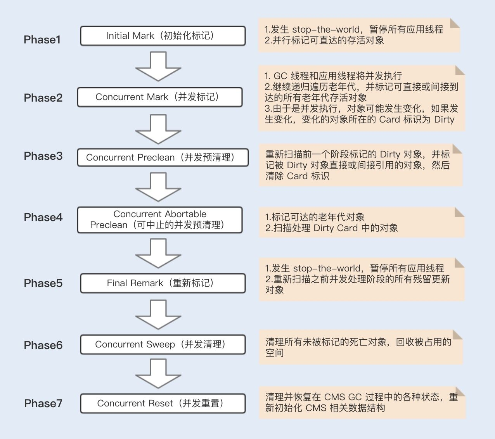
G1 垃圾收集器是基于标记整理算法实现的，是一个分代垃圾收集器，既负责年轻代，也负责老年代的垃圾回收。
跟之前各个分代使用连续的虚拟内存地址不一样，G1 使用了一种 Region 方式对堆内存进行了划分，同样也分年轻代、老年代，但每一代使用的是 N 个不连续的 Region 内存块，每个 Region 占用一块连续的虚拟内存地址。
在 G1 中，还有一种叫 Humongous 区域，用于存储特别大的对象。G1 内部做了一个优化，一旦发现没有引用指向巨型对象，则可直接在年轻代的 YoungGC 中被回收掉。
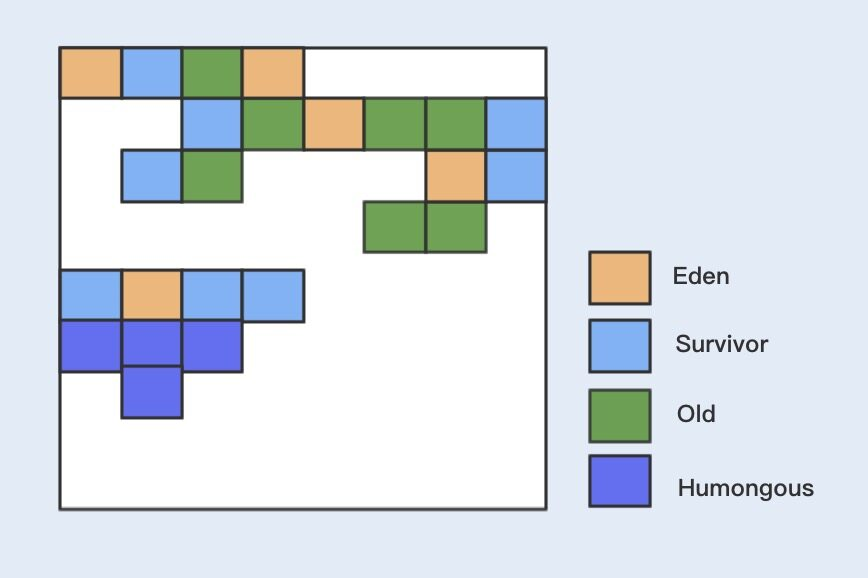
G1 分为 Young GC、Mix GC 以及 Full GC。
G1 Young GC 主要是在 Eden 区进行，当 Eden 区空间不足时，则会触发一次 Young GC。将 Eden 区数据移到 Survivor 空间时，如果 Survivor 空间不足，则会直接晋升到老年代。此时 Survivor 的数据也会晋升到老年代。Young GC 的执行是并行的，期间会发生 STW。
当堆空间的占用率达到一定阈值后会触发 G1 Mix GC（阈值由命令参数 -XX:InitiatingHeapOccupancyPercent 设定，默认值 45），Mix GC 主要包括了四个阶段，其中只有并发标记阶段不会发生 STW，其它阶段均会发生 STW。
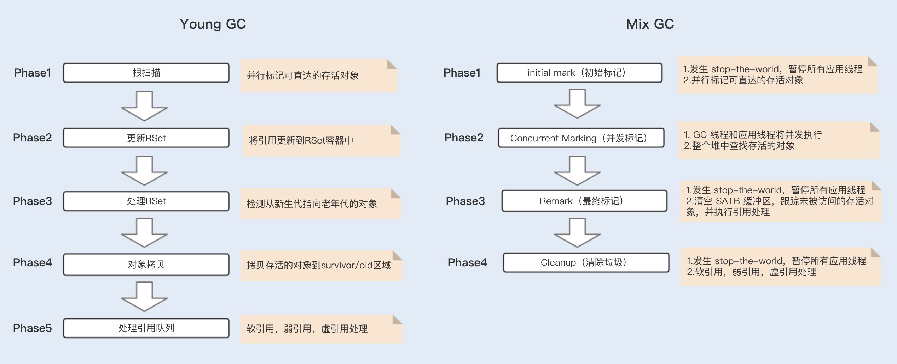
G1 和 CMS 主要的区别在于：
- CMS 主要集中在老年代的回收，而 G1 集中在分代回收，包括了年轻代的 Young GC 以及老年代的 Mix GC；
- G1 使用了 Region 方式对堆内存进行了划分，且基于标记整理算法实现，整体减少了垃圾碎片的产生；
- 在初始化标记阶段，搜索可达对象使用到的 Card Table，其实现方式不一样。
这里我简单解释下 Card Table，在垃圾回收的时候都是从 Root 开始搜索，这会先经过年轻代再到老年代，也有可能老年代引用到年轻代对象，如果发生 Young GC，除了从年轻代扫描根对象之外，还需要再从老年代扫描根对象，确认引用年轻代对象的情况。
**这种属于跨代处理，非常消耗性能。**为了避免在回收年轻代时跨代扫描整个老年代，CMS 和 G1 都用到了 Card Table 来记录这些引用关系。只是 G1 在 Card Table 的基础上引入了 RSet，每个 Region 初始化时，都会初始化一个 RSet，RSet 记录了其它 Region 中的对象引用本 Region 对象的关系。
除此之外，CMS 和 G1 在解决并发标记时漏标的方式也不一样，CMS 使用的是 Incremental Update 算法，而 G1 使用的是 SATB 算法。
首先，我们要了解在并发标记中，G1 和 CMS 都是基于三色标记算法来实现的：
- 黑色：根对象，或者对象和对象中的子对象都被扫描；
- 灰色：对象本身被扫描，但还没扫描对象中的子对象；
- 白色：不可达对象。
基于这种标记有一个漏标的问题，也就是说，当一个白色标记对象，在垃圾回收被清理掉时，正好有一个对象引用了该白色标记对象，此时由于被回收掉了，就会出现对象丢失的问题。
为了避免上述问题，CMS 采用了 Incremental Update 算法，只要在写屏障（write barrier）里发现一个白对象的引用被赋值到一个黑对象的字段里，那就把这个白对象变成灰色的。而在 G1 中，采用的是 SATB 算法，该算法认为开始时所有能遍历到的对象都是需要标记的，即认为都是活的。
G1 具备 Pause Prediction Model ，即停顿预测模型。用户可以设定整个 GC 过程中期望的停顿时间，用参数 -XX:MaxGCPauseMillis 可以指定一个 G1 收集过程的目标停顿时间，默认值 200ms。
G1 会根据这个模型统计出来的历史数据，来预测一次垃圾回收所需要的 Region 数量，通过控制 Region 数来控制目标停顿时间的实现。
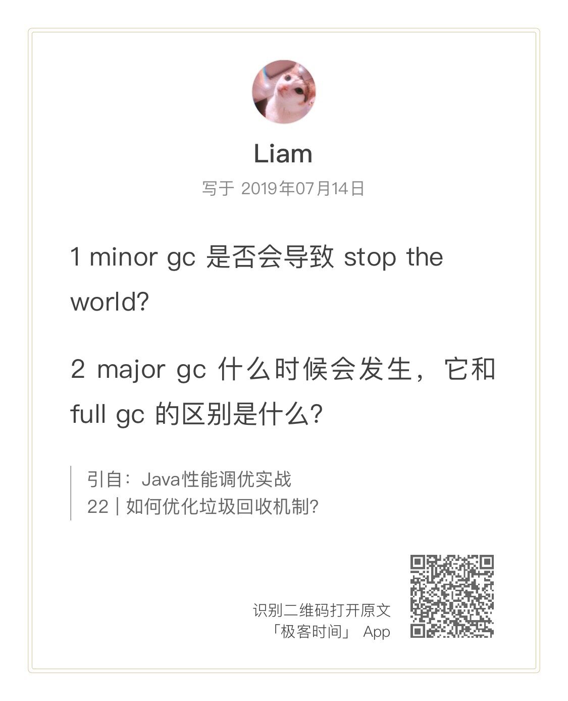
Liam 提出的这两个问题都非常好。
不管什么 GC，都会发送 stop-the-world，区别是发生的时间长短。而这个时间跟垃圾收集器又有关系，Serial、PartNew、Parallel Scavenge 收集器无论是串行还是并行，都会挂起用户线程，而 CMS 和 G1 在并发标记时，是不会挂起用户线程的，但其它时候一样会挂起用户线程，stop the world 的时间相对来说就小很多了。
Major Gc 在很多参考资料中是等价于 Full GC 的，我们也可以发现很多性能监测工具中只有 Minor GC 和 Full GC。一般情况下，一次 Full GC 将会对年轻代、老年代、元空间以及堆外内存进行垃圾回收。触发 Full GC 的原因有很多：
- 当年轻代晋升到老年代的对象大小，并比目前老年代剩余的空间大小还要大时，会触发 Full GC；
- 当老年代的空间使用率超过某阈值时，会触发 Full GC；
- 当元空间不足时（JDK1.7 永久代不足），也会触发 Full GC；
- 当调用 System.gc() 也会安排一次 Full GC。
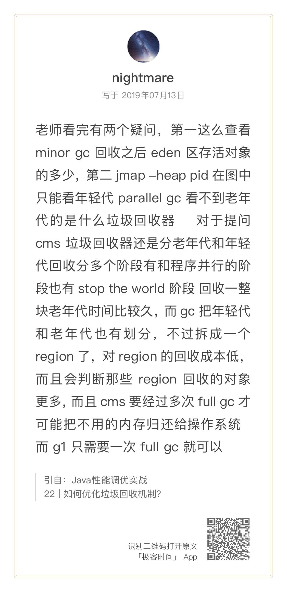
接下来解答 ninghtmare 的提问。我们可以通过 jstat -gc pid interval 查看每次 GC 之后，具体每一个分区的内存使用率变化情况。我们可以通过 JVM 的设置参数，来查看垃圾收集器的具体设置参数，使用的方式有很多，例如 jcmd pid VM.flags 就可以查看到相关的设置参数。
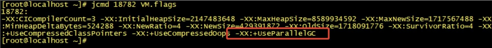
这里附上第 22 讲中，我总结的各个设置参数对应的垃圾收集器图表。
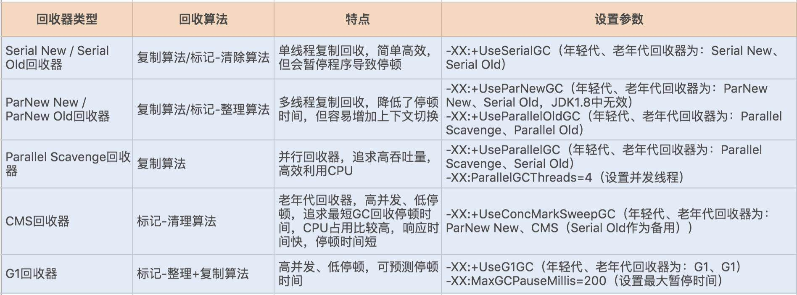
[第 23 讲]
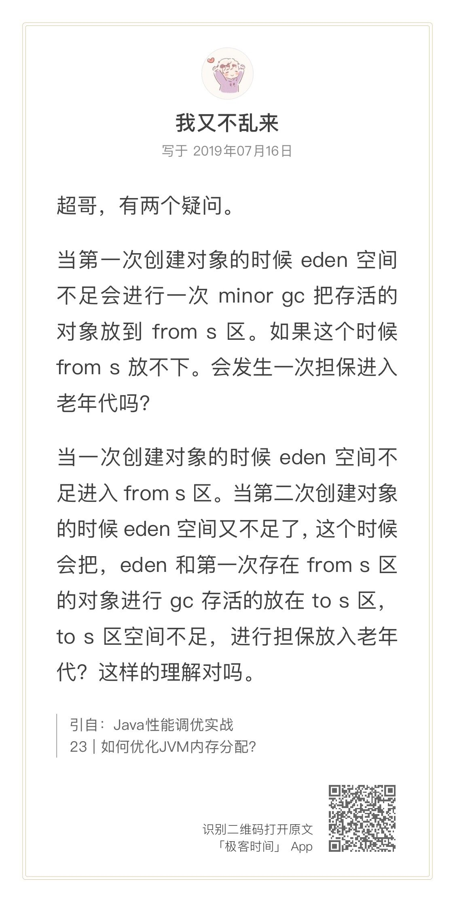
我又不乱来同学的留言真是没有乱来，细节掌握得很好！
前提是老年代有足够接受这些对象的空间，才会进行分配担保。如果老年代剩余空间小于每次 Minor GC 晋升到老年代的平均值，则会发起一次 Full GC。
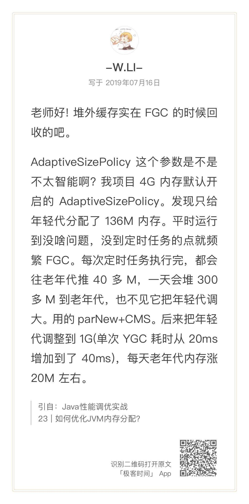
看到这里，我发现爱提问的同学始终爱提问，非常鼓励啊，技术是需要交流的，也欢迎你有任何疑问，随时留言给我，我会知无不尽。
现在回答 W.LI 同学的问题。这个会根据我们创建对象占用的内存使用率，合理分配内存，并不仅仅考虑对象晋升的问题，还会综合考虑回收停顿时间等因素。针对某些特殊场景，我们可以手动来调优配置。
[第 24 讲]
下面解答 Geek_75b4cd 同学的问题。
我们知道，ThreadLocal 是基于 ThreadLocalMap 实现的，这个 Map 的 Entry 继承了 WeakReference，而 Entry 对象中的 key 使用了 WeakReference 封装，也就是说 Entry 中的 key 是一个弱引用类型，而弱引用类型只能存活在下次 GC 之前。
如果一个线程调用 ThreadLocal 的 set 设置变量，当前 ThreadLocalMap 则会新增一条记录，但由于发生了一次垃圾回收，此时的 key 值就会被回收，而 value 值依然存在内存中，由于当前线程一直存在，所以 value 值将一直被引用。.
这些被垃圾回收掉的 key 就会一直存在一条引用链的关系：Thread --> ThreadLocalMap–>Entry–>Value。这条引用链会导致 Entry 不会被回收，Value 也不会被回收，但 Entry 中的 key 却已经被回收的情况发生，从而造成内存泄漏。
我们只需要在使用完该 key 值之后，将 value 值通过 remove 方法 remove 掉，就可以防止内存泄漏了。
最后一个问题来自于 WL 同学。
内存泄漏是指不再使用的对象无法得到及时的回收，持续占用内存空间，从而造成内存空间的浪费。例如，我在[第 03 讲]中说到的，Java6 中 substring 方法就可能会导致内存泄漏。
当调用 substring 方法时会调用 new string 构造函数，此时会复用原来字符串的 char 数组，而如果我们仅仅是用 substring 获取一小段字符，而在原本 string 字符串非常大的情况下，substring 的对象如果一直被引用，由于 substring 里的 char 数组仍然指向原字符串，此时 string 字符串也无法回收，从而导致内存泄露。
内存溢出则是发生了 OutOfMemoryException，内存溢出的情况有很多，例如堆内存空间不足，栈空间不足，还有方法区空间不足等都会导致内存溢出。
内存泄漏与内存溢出的关系：内存泄漏很容易导致内存溢出，但内存溢出不一定是内存泄漏导致的。